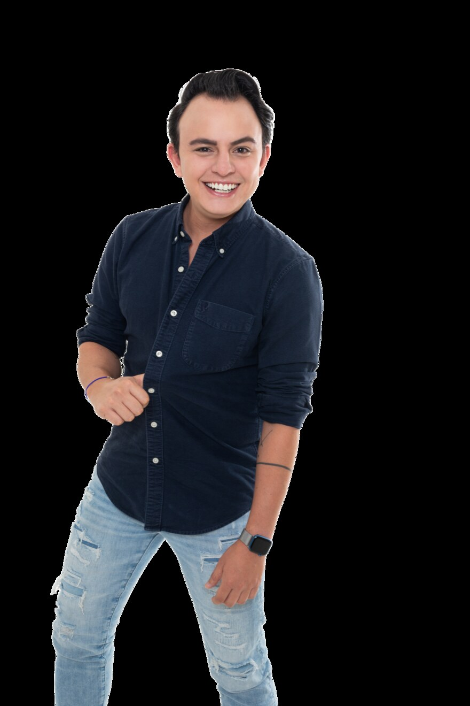

6 sesiones para que entiendas, calcules y controles el costo de tu menú — con metodología clara, aplicada directamente a Brasil 2000. al terminar, sabes exactamente qué te deja cada platillo.
el precio de venta se fijó por intuición o por lo que cobra la competencia. pero sin conocer el costo real de cada receta, no hay manera de saber si estás ganando o perdiendo en cada venta.
si el precio de un ingrediente sube y no tienes el costeo actualizado, el margen baja sin que te des cuenta. el food cost se convierte en un número que solo aparece cuando ya es tarde.
hay platillos que se venden mucho pero dejan poco, y otros que dejan bien pero nadie los pide. sin costeo no puedes tomar decisiones de menú basadas en números reales.
sin una receta estandarizada y costeada, el costo real varía cada día dependiendo de quién prepare. la consistencia en el plato y en el margen empieza en la receta escrita.
un restaurante puede tener mesas llenas y aun así perder dinero. el food cost no controlado es la causa más frecuente de márgenes que no cierran, aunque las ventas vayan bien. el costeo no es un tema financiero avanzado — es el primer control que cualquier negocio de comida necesita tener en orden.
saber costear no es solo un ejercicio contable: es la herramienta que te permite decidir qué poner en el menú, a qué precio venderlo y qué ingredientes puedes subir de calidad sin que el margen se rompa.
las sesiones de teoría te dan la metodología y el contexto. las sesiones de revisión son para aplicarla: traes tu avance y lo trabajamos juntos hasta que quede bien.
qué es el food cost, por qué importa y cómo se calcula. diferencia entre costo teórico y real. cómo leer e interpretar el porcentaje de food cost en tu negocio. ejemplos con platillos reales.
cómo construir una receta estandarizada: ingredientes, unidades de medida, porciones y rendimientos. cómo calcular el costo por porción de cada ingrediente y llegar al costo total del platillo.
cómo fijar el precio de venta a partir del costo real. margen objetivo por tipo de platillo. introducción a ingeniería de menú: qué platillos impulsar, cuáles ajustar y cuáles revisar.
revisamos el recetario que hayas trabajado entre sesiones: estructura, porciones, unidades. corregimos errores, resolvemos dudas y te damos retroalimentación para que el recetario quede sólido antes de costear.
revisamos los costos calculados por platillo: food cost real, comparativa con precios actuales y detección de los productos con mayor y menor margen. identificamos qué ajustes son necesarios.
revisamos el tabulador de precios de venta y los ajustes al menú. cerramos con un plan de acción claro: qué implementar primero y cómo mantener el costeo actualizado sin que se convierta en una carga.

soy Alonso Herrera, fundador de ga·astro. llevo más de 6 años trabajando con restaurantes y negocios de comida en México, acompañando a dueños y encargados para que entiendan y controlen los números de su negocio.
el costeo es uno de los temas donde más diferencia hace entenderlo bien desde el principio. no es solo una fórmula: es una manera de tomar decisiones sobre el menú, los precios y los insumos con información real.
en estas 6 sesiones trabajo directamente contigo, con tu menú y tus números — no con ejemplos genéricos.
años trabajando con restaurantes en México
negocios acompañados en costeo y operación
aplicado a tu menú real, no a ejemplos
brasil 2000 · león, guanajuato · programa completo
la propuesta vence el 8 de diciembre. confirma hoy y agendamos la primera sesión para las próximas semanas.
hablar con alonsopropuesta válida hasta el 8 de diciembre de 2026.